Presentation 1
British and American English
Morphological differences between two varieties of one language.
By María José, Keilyn and Valeria

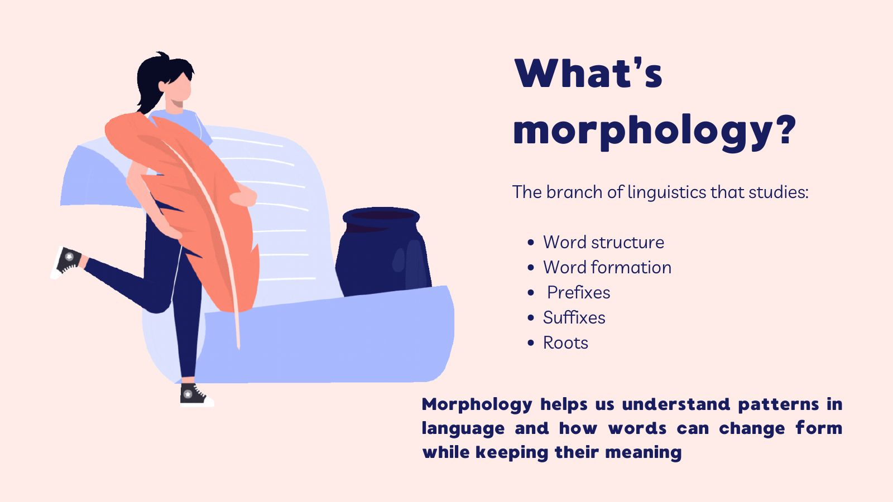
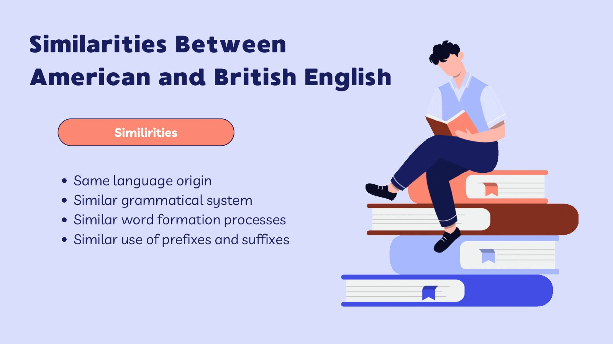

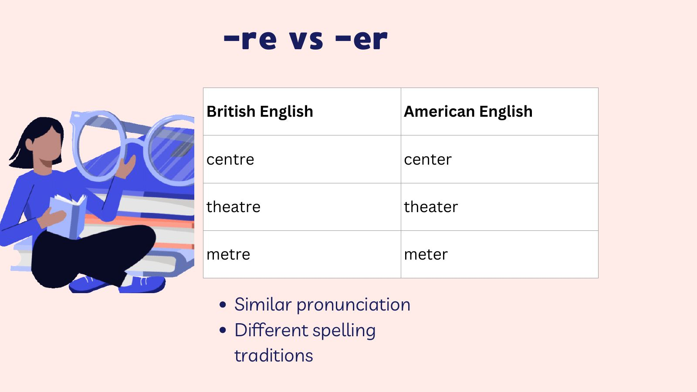
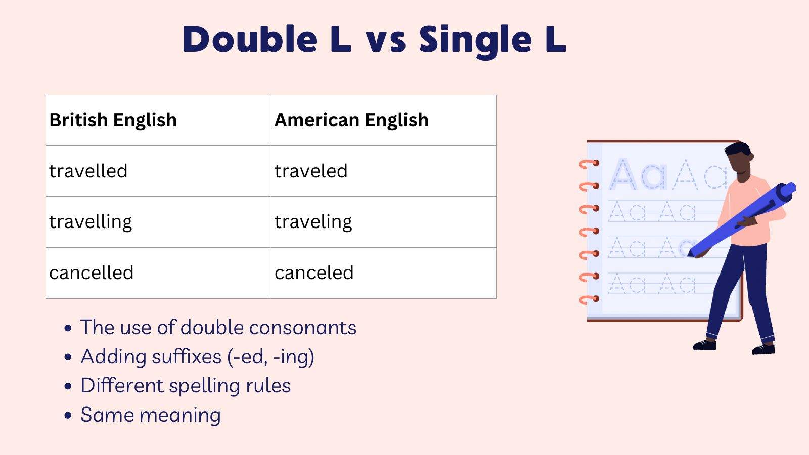
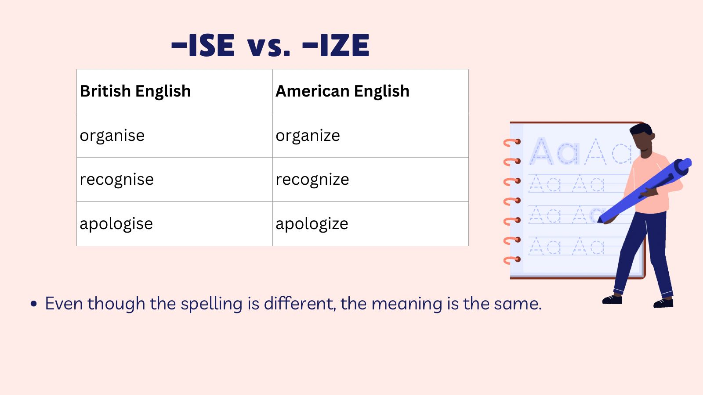


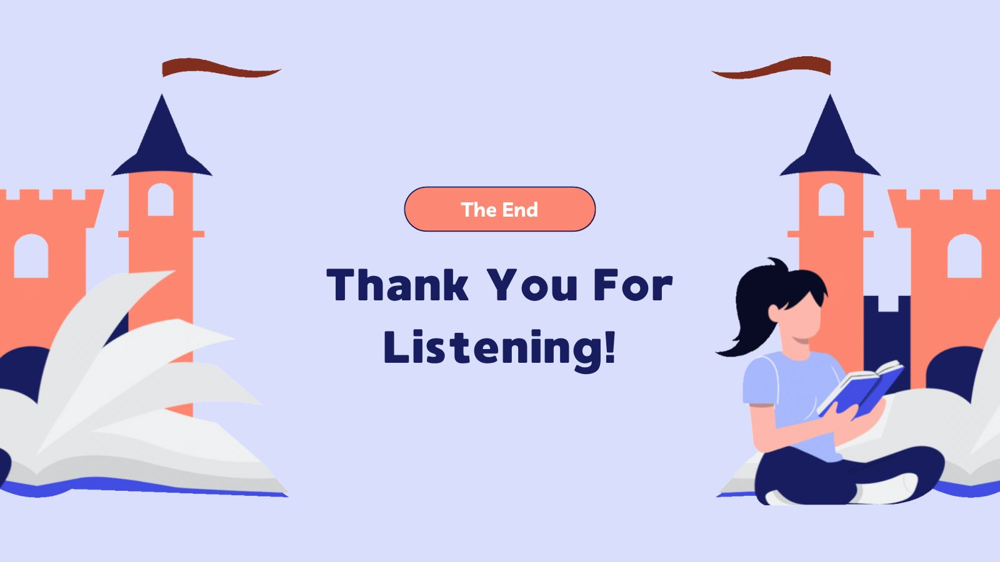
What's morphology?
The branch of linguistics that studies word structure and word formation: roots, prefixes, and suffixes. It helps us see patterns in language and how words can change form while keeping their meaning.
What the two varieties share
- Same origin
- Both developed from the same language.
- Same grammar
- A very similar grammatical system.
- Same word formation
- Similar processes and the same prefixes and suffixes.
Four patterns that differ
Switch the variety to see how the endings change while the meaning stays the same.
-our / -or
colourfavourhonour-re / -er
centretheatremetreDouble L / single L
travelledtravellingcancelled-ise / -ize
organiserecogniseapologiseSame meaning, same pronunciation, different spelling conventions. With double L, the difference shows up when adding suffixes like -ed and -ing.
Why do these differences exist?
The two varieties developed separately over time because they were geographically separated, a clear case of regional variation. The American lexicographer Noah Webster also set out to simplify English spelling, which is why many American spellings are shorter than their British equivalents. Over time, each set of spellings became standard in its own variety.
Why do they matter?
- Identity
- Spelling is part of cultural and linguistic identity.
- Academic and professional writing
- Writers are expected to follow one convention consistently.
- Reading both
- Knowing the patterns helps us understand texts from both the US and the UK, and recognize that different spellings carry the same meaning.
Colour or color. Same word, same meaning, two standards.
Our notes
Preparing this presentation helped us see that colour and color aren't mistakes, just two different standards. In class we mostly write American English, but a lot of the books and websites we read use British spelling, so now we notice it right away.
Looking back, we'd add one thing: some of these patterns, like -ise and -ize, are more about spelling conventions than about morphology itself.
Research report
Beyond spelling
After the presentation, the group wrote an academic report (MLA format) that goes past spelling to the real structural differences between the two varieties.
What are the main morphological differences between American and British English, and what historical and linguistic factors explain them?
The report makes an important distinction: spelling conventions like color / colour aren't morphology, because no morpheme or word-formation rule changes. Real morphological differences show up in inflection (grammatical endings) and derivation (affixes that build new words).
Four morphological patterns
Switch the variety to see which endings change.
Past tense: -ed / -t
learnedburneddreamedspelledPast participle of get
has gotten colderPast of fit
the dress fit-ward / -wards
towardforwardbackwardafterwardThese are preferences, not strict rules: learned and burned are also common in Britain. And both varieties use got for possession: I’ve got a new phone.
Why did they diverge?
- colonial lag and retention
- Settlers in 17th-century North America brought the English of their time. Some older forms survived in America but changed in England: gotten stayed in American English, while British English simplified it to got.
- paradigm regularization
- American English tends to level irregular verbs into the regular -ed pattern (learned, burned), while British English keeps more of the older -t forms (learnt, burnt).
Conclusions
- Where the differences are
- Mainly in verb inflection (past tense and past participles) and in derivational suffixes on directional adverbs.
- Not errors
- Both forms are legitimate standard usage in their own regions, and they don’t get in the way of mutual intelligibility.
- No single trend
- American English isn’t simply “more regular,” and British English isn’t simply “more conservative.” Retention, regularization, and frequency of use all interact.
Selected works cited
Kortmann, Bernd, and Benedikt Szmrecsanyi. “Global Synopsis: Morphological and Syntactic Variation in English.” A Handbook of Varieties of English, edited by Bernd Kortmann et al., vol. 2, Mouton de Gruyter, 2004, pp. 1142–1202.
Levin, Magnus. “The Formation of the Preterite and the Past Participle.” One Language, Two Grammars?, edited by Günter Rohdenburg and Julia Schlüter, Cambridge UP, 2009, pp. 60–85.
Rohdenburg, Günter, and Julia Schlüter, editors. One Language, Two Grammars? Differences between British and American English. Cambridge UP, 2009.
Trudgill, Peter, and Jean Hannah. International English: A Guide to the Varieties of Standard English. 6th ed., Routledge, 2017.
Yule, George. The Study of Language. 7th ed., Cambridge UP, 2020.
Presentation 2
Mirror languages: Spanish and Italian
Two Romance languages compared through syntax, morphology, phonetics, and phonology.
Group presentation

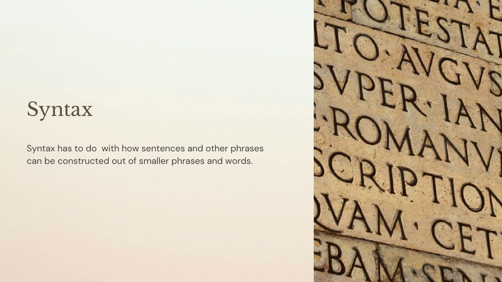


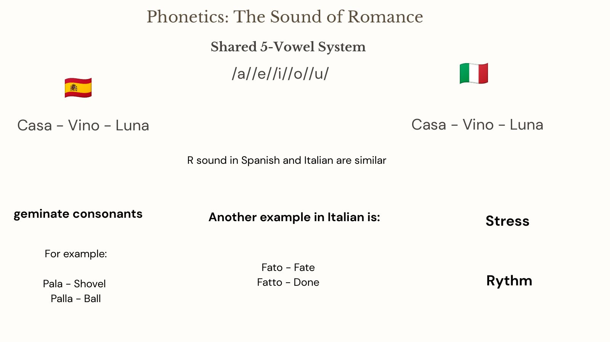
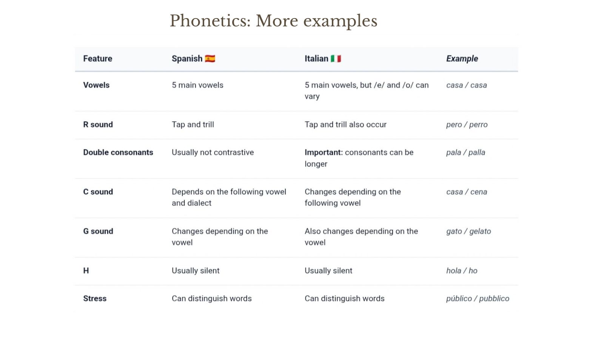
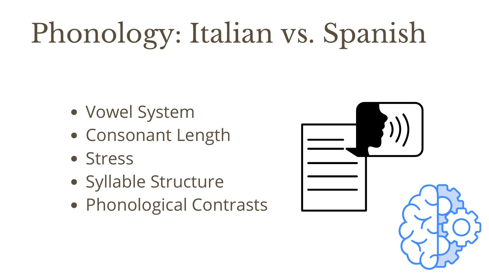
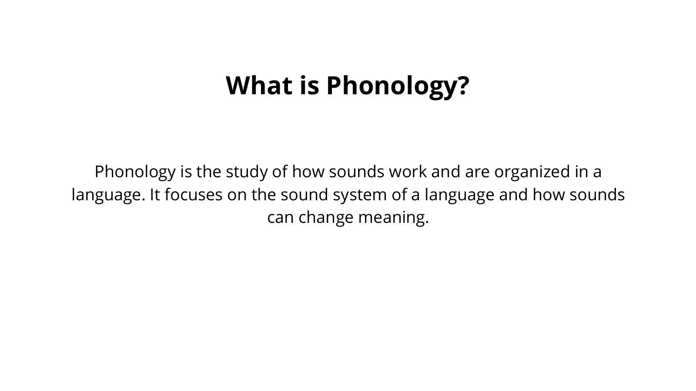
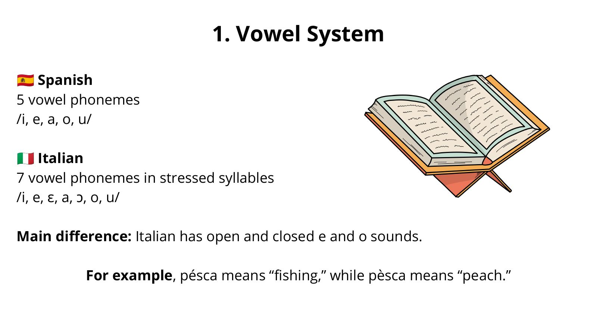

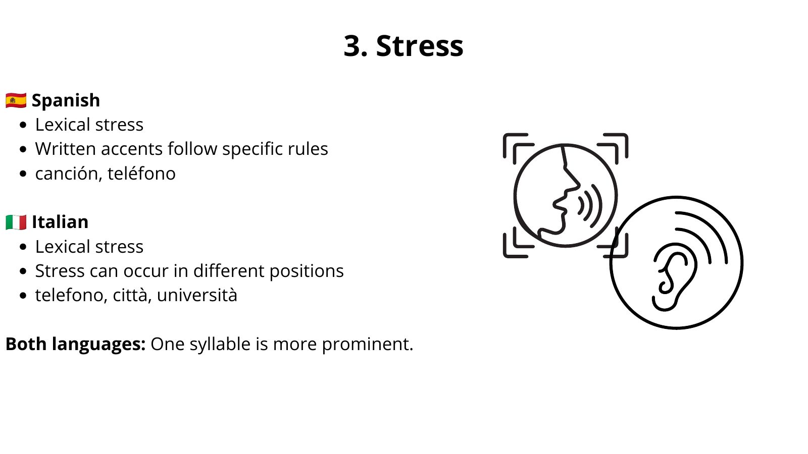
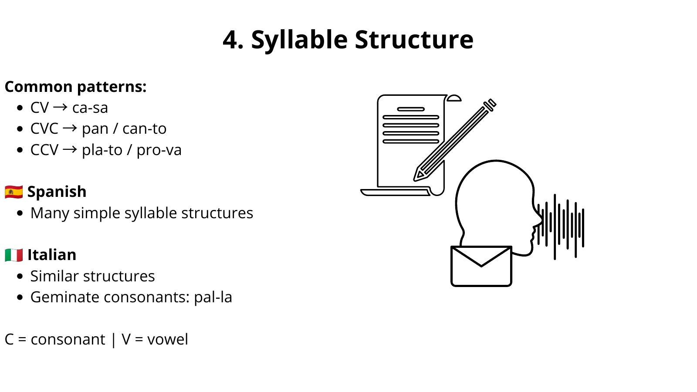
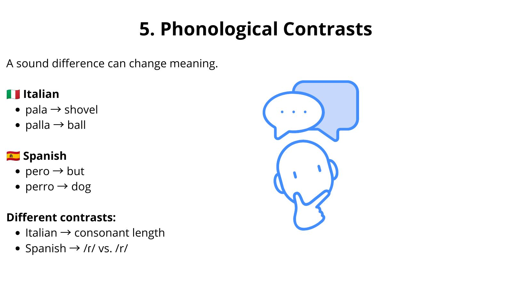
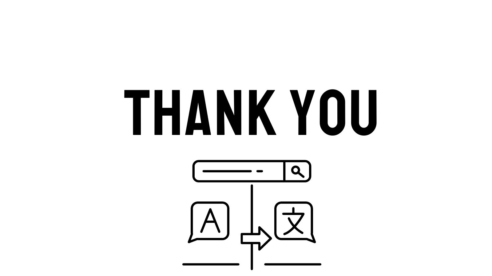
Syntax
Syntax is about how sentences and phrases are built from smaller phrases and words. Both languages share the basic order Subject + Verb + Object.
Spanish
- Yo como pasta.
- María lee el libro.
Italian
- Io mangio la pasta.
- Maria legge il libro.
Articles and gender
Spanish
- el / los masculine
- la / las feminine
- los amigos
- el libro, la casa
Italian
- il, lo, l’ / i, gli masculine
- la, l’ / le feminine
- gli amici, l’oceano
- il libro, la casa, l’acqua
In both languages, most nouns ending in -o are masculine and most ending in -a are feminine: gato / gata, gatto / gatta. Watch out for exceptions like el agua and el hacha, feminine nouns that take el before a stressed a.
Adjectives: agreement and position
Adjectives agree with the noun in gender and number, and usually come after it.
Spanish
- libro rojo
- casa grande
- niños inteligentes
Italian
- libro rosso
- casa grande
- bambini intelligenti
In Italian, a few adjectives like grande can also go before the noun: una grande casa.
Verb conjugation
| Person | Spanish, present | Italian, present | Spanish, past | Italian, past |
|---|---|---|---|---|
| I | yo como | io mangio | yo comí | io mangiai |
| you | tú comes | tu mangi | tú comiste | tu mangiasti |
| he / she | él / ella come | lui / lei mangia | él / ella comió | lui / lei mangiò |
| we | nosotros comemos | noi mangiamo | nosotros comimos | noi mangiammo |
| they | ellos comen | loro mangiano | ellos comieron | loro mangiarono |
Verbs: comer and mangiare. The Italian past here is the passato remoto; in everyday speech Italians usually say ho mangiato.
Morphology
The study of the structure and formation of words, and how they convey meaning and grammatical relationships.
Gender
Spanish
- niño → niña
- gato → gata
- amigo → amiga
Italian
- bambino → bambina
- gatto → gatta
- amico → amica
Plural formation
Spanish: add -s / -es
- libro → libros
- gato → gatos
- amigo → amigos
Italian: change the final vowel
- libro → libri
- gatto → gatti
- amico → amici
Mirror or not?
Similarities
- Both are Romance languages
- Masculine and feminine nouns
- Singular and plural
- Verb conjugation
- Word endings carry grammatical information
Differences
- Spanish adds -s / -es for plural
- Italian changes the final vowel
- Some words have different gender patterns
- Verb endings are different
Phonetics and phonology
Phonology studies how sounds are organized in a language and how they can change meaning. Both languages share the five vowels /a e i o u/ (casa, vino, luna sound alike in both), and their R sounds are similar.
| Feature | Spanish | Italian | Example |
|---|---|---|---|
| Vowels | 5 vowel phonemes /i e a o u/ | 7 in stressed syllables /i e ɛ a ɔ o u/ | pésca / pèsca |
| R sound | Tap and trill | Tap and trill also occur | pero / perro |
| Double consonants | Not contrastive | Can change meaning | pala / palla |
| C sound | Depends on the next vowel and the dialect | Depends on the next vowel | casa / cena |
| G sound | Depends on the next vowel | Depends on the next vowel | gato / gelato |
| H | Usually silent | Usually silent | hola / ho |
| Stress | Can distinguish words | Can distinguish words | público / pubblico |
One sound, a different word
A phonological contrast is a sound difference that changes meaning. Each language uses different contrasts.
Italian: consonant length
pala
shovel
palla
ball
Italian: open vs. closed e
pésca
fishing
pèsca
peach
Spanish: tap vs. trill
pero
but
perro
dog
Stress and syllables
Both languages have lexical stress: one syllable is more prominent. Spanish marks it with written accents that follow specific rules (canción, teléfono); Italian stress can fall in different positions (telefono, città, università).
Their syllable structures are similar too: CV ca-sa, CVC pan, can-to, CCV pla-to, pro-va. Italian geminates split across syllables: pal-la. (C = consonant, V = vowel.)
Our notes
As Spanish speakers, we understood a lot of Italian when we read it, especially the verbs. What surprised us most was gemination: pala and palla are different words just because of a longer l.
Also, burro in Italian means butter, not donkey, which made us laugh.
Presentation 3
Morphology: Spanish and Portuguese
How two sister languages build their words.
Group presentation
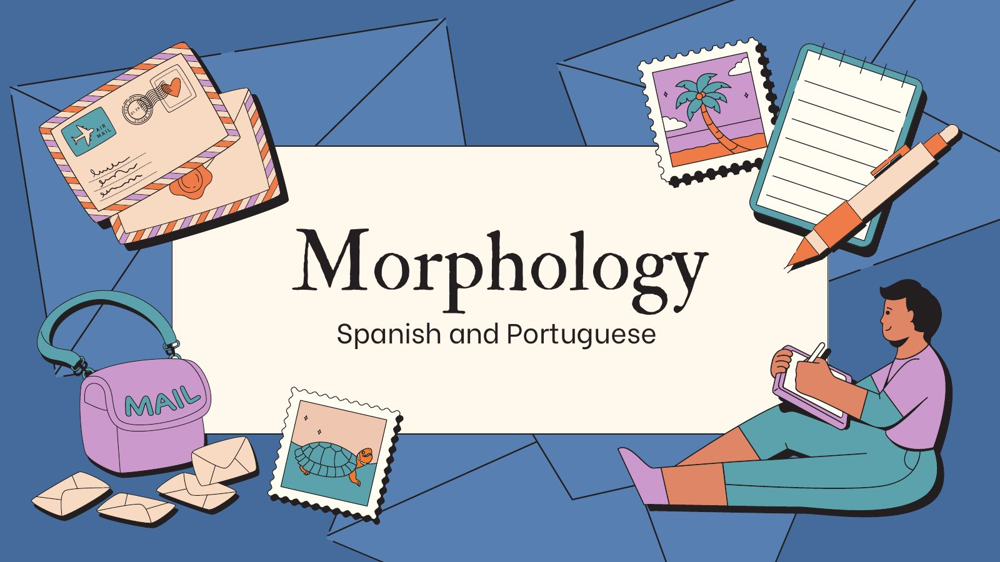
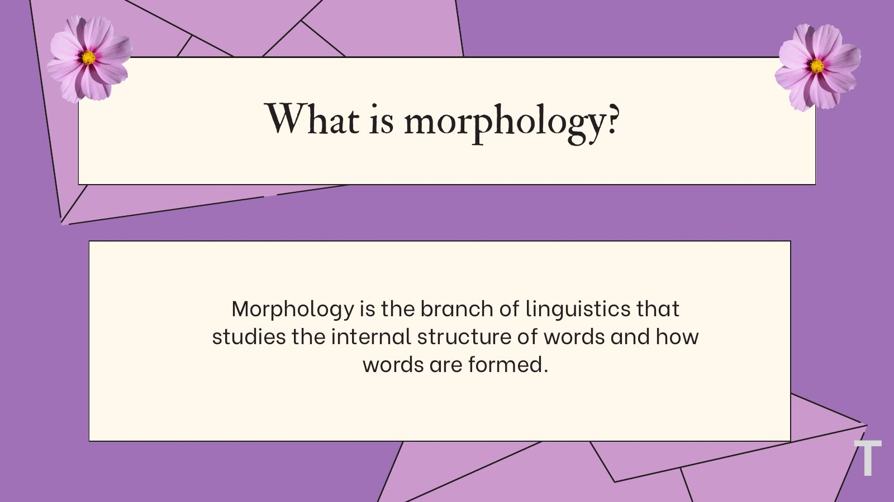
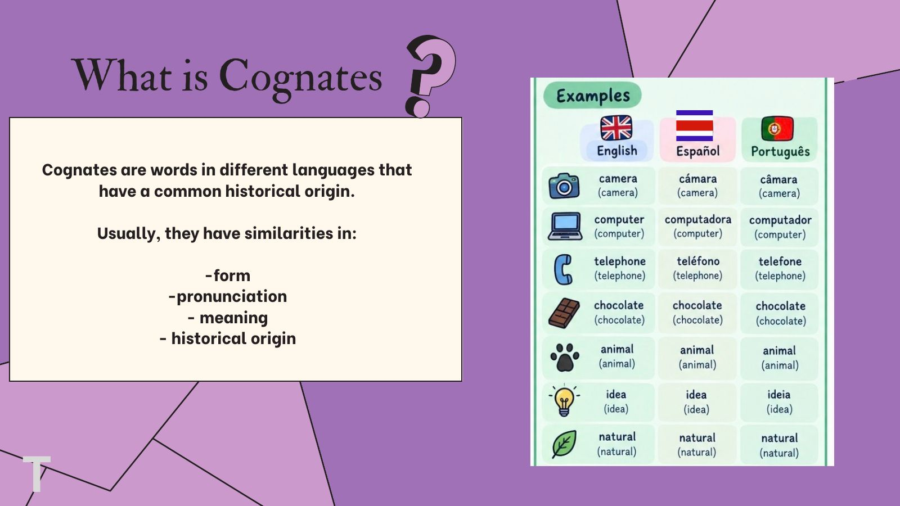
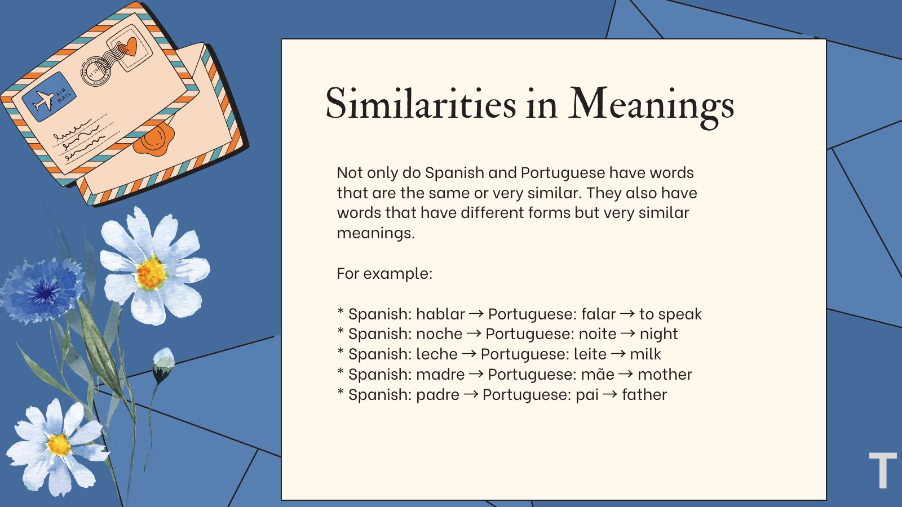
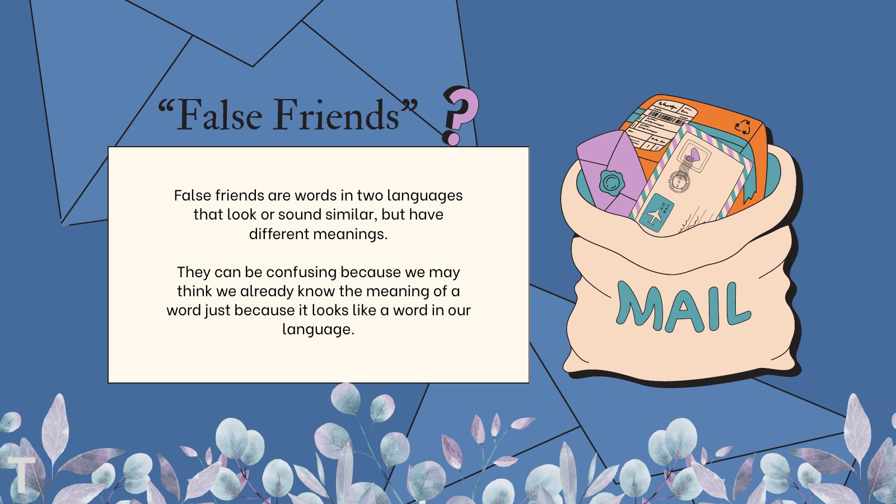
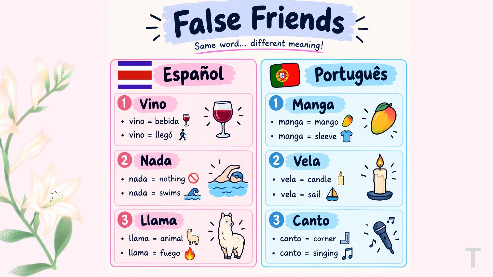
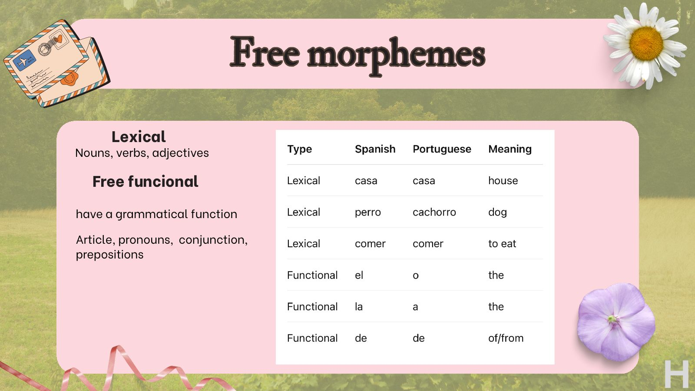
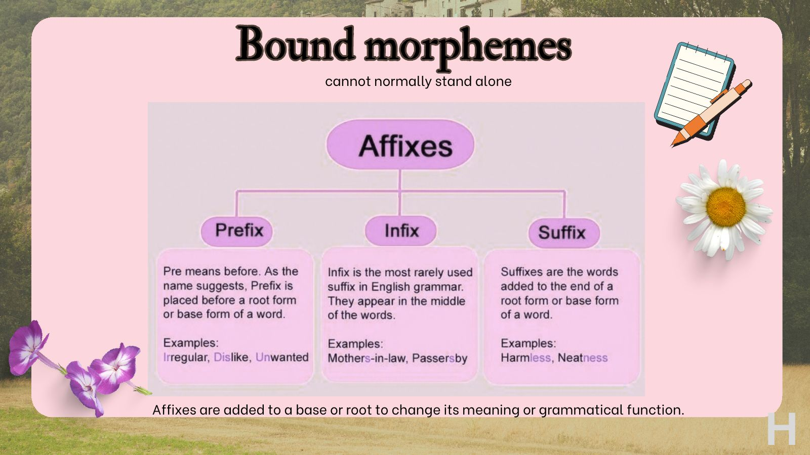
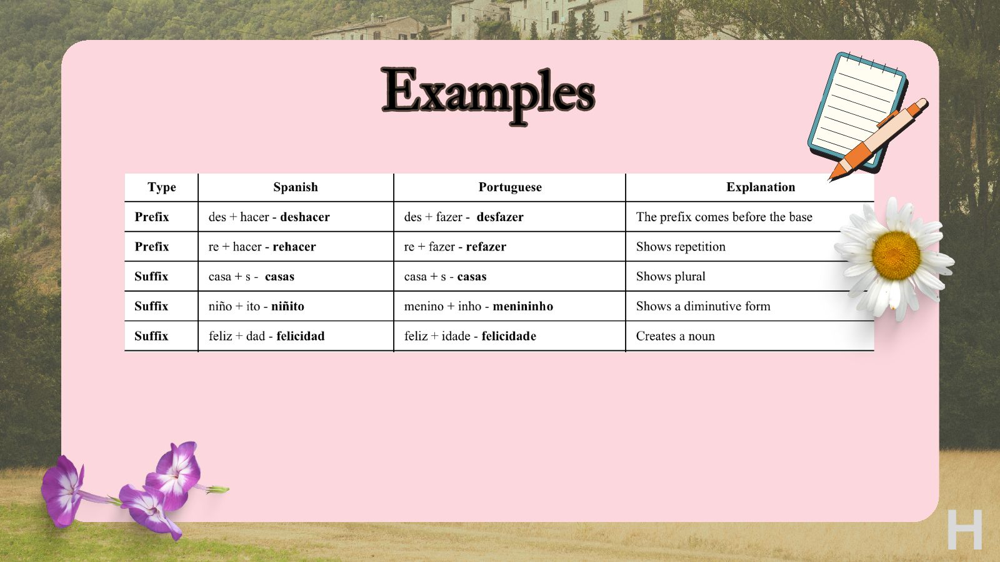
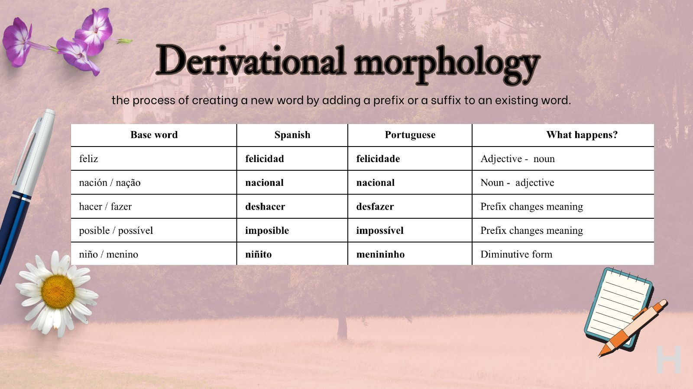
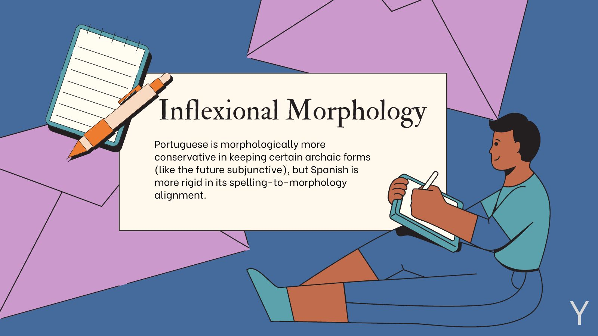
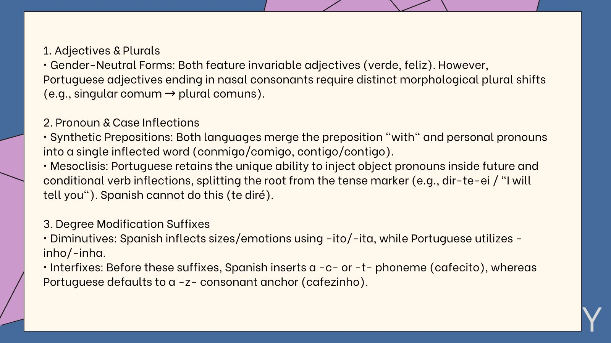
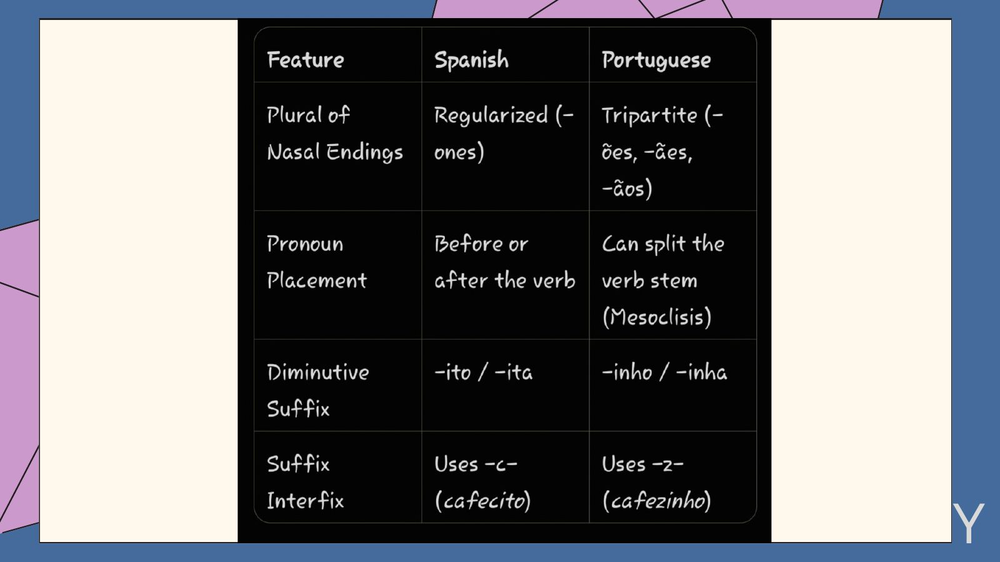
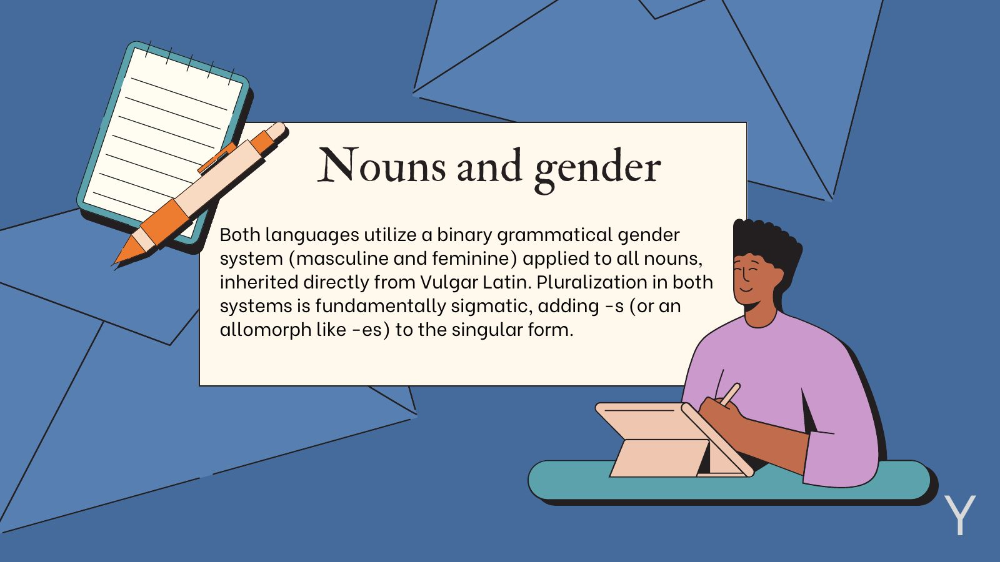
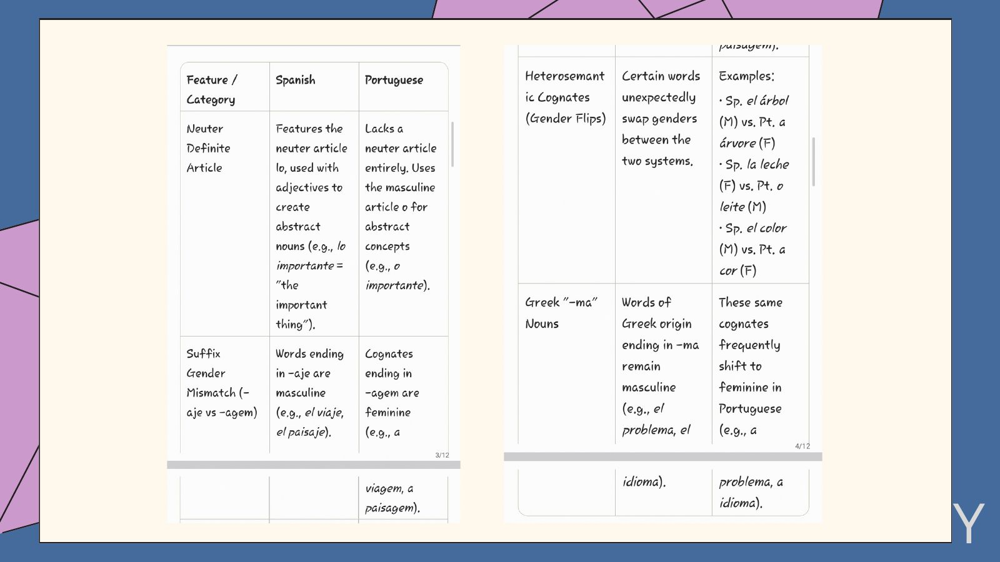
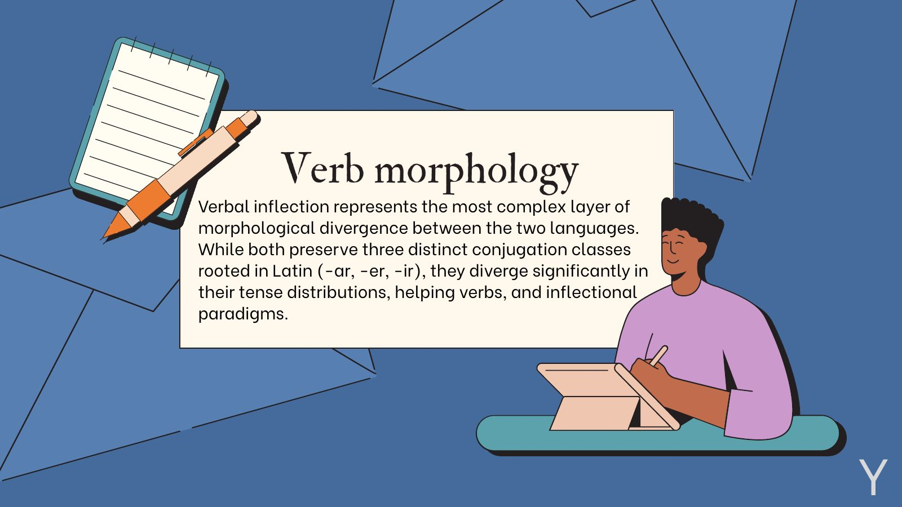
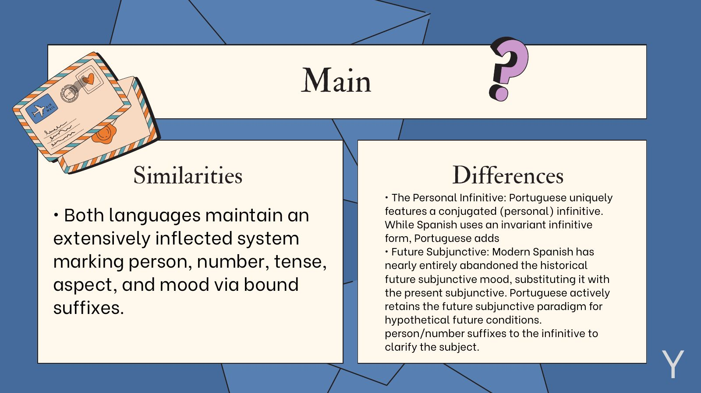
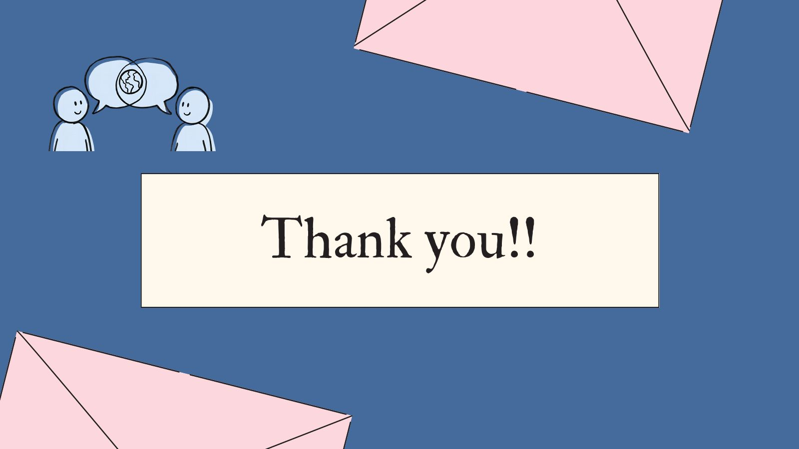
Words with shared roots
Morphology is the branch of linguistics that studies the internal structure of words and how they're formed. Comparing Spanish and Portuguese starts with the words they share.
Cognates
Cognates are words in different languages with a common historical origin. They're usually similar in form, pronunciation, and meaning.
| English | Spanish | Portuguese |
|---|---|---|
| camera | cámara | câmara |
| computer | computadora | computador |
| telephone | teléfono | telefone |
| chocolate | chocolate | chocolate |
| idea | idea | ideia |
| natural | natural | natural |
Different form, same meaning
Some words look different but mean the same thing.
Spanish
- hablar → to speak
- noche → night
- leche → milk
- madre → mother
- padre → father
Portuguese
- falar → to speak
- noite → night
- leite → milk
- mãe → mother
- pai → father
False friends
False friends look or sound alike in two languages but mean different things. They're confusing because we think we already know the word.
Spanish
exquisito
delicious
Portuguese
esquisito
strange, weird
Spanish
embarazada
pregnant
Portuguese
embaraçada
embarrassed
Spanish
polvo
dust
Portuguese
polvo
octopus
Spanish
oficina
office
Portuguese
oficina
workshop, garage
Spanish
rato
a short while
Portuguese
rato
mouse
Spanish
borracha
drunk (woman)
Portuguese
borracha
eraser, rubber
Don't confuse these with words like vino (wine / came) or manga (mango / sleeve), which have two meanings inside one language. Those are homonyms.
Morphemes
A morpheme is the smallest unit that pairs a form with a meaning.
Free morphemes
They can stand alone as words. Lexical morphemes carry content (nouns, verbs, adjectives); functional ones do grammatical work (articles, pronouns, conjunctions, prepositions).
| Type | Spanish | Portuguese | Meaning |
|---|---|---|---|
| Lexical | casa | casa | house |
| Lexical | perro | cachorro | dog |
| Lexical | comer | comer | to eat |
| Functional | el | o | the |
| Functional | la | a | the |
| Functional | de | de | of, from |
Bound morphemes
They can't stand alone. Affixes attach to a root to change its meaning or grammatical function.
- prefix
- Goes before the root. irregular, dislike, unwanted
- suffix
- Goes after the root. harmless, neatness
- infix
- Goes inside the root. Very rare in English, Spanish, and Portuguese; in English it only shows up in informal forms like abso-freaking-lutely.
Build the word
Switch languages to compare how the same affixes work in each.
Prefixes
deshacerrehacerimposibleDerivational suffixes
felicidadnacionalDiminutives
niñitocafecitoPlurals
casascomúnesDerivation and inflection
- derivational
- Creates a new word, sometimes of a new class. feliz → felicidad / felicidade (adjective to noun), nación → nacional (noun to adjective), posible → imposible (new meaning).
- inflectional
- Adds grammatical information like number, gender, person, or tense, without making a new word. casa → casas
Where they differ
Portuguese is more conservative and keeps some older forms, like the future subjunctive. Spanish spelling lines up more neatly with its morphology.
| Feature | Spanish | Portuguese |
|---|---|---|
| Plural of nasal endings | One pattern: canción → canciones | Three: canções, pães, mãos |
| Adjectives in -m / -n | común → comunes | comum → comuns |
| "With me / with you" | conmigo, contigo | comigo, contigo |
| Diminutive | -ito / -ita | -inho / -inha |
| Linking consonant | -c-: cafecito | -z-: cafezinho |
| Pronoun placement | Before or after the verb | Can go inside the verb (mesoclisis) |
te diré. dir-te-ei.
Both mean "I will tell you." In mesoclisis, Portuguese places the pronoun te between the verb stem dir- and the future ending -ei. Spanish can't do this.
Nouns and gender
Both languages give every noun a grammatical gender, masculine or feminine, inherited from Vulgar Latin. Both form plurals by adding -s or -es. But some cognates switch gender:
Spanish
- el árbol
- la leche
- el color
- el viaje, el paisaje
Portuguese
- a árvore
- o leite
- a cor
- a viagem, a paisagem
Spanish has a neuter article lo for abstract ideas (lo importante, "the important thing"); Portuguese uses the masculine o (o importante). Greek-origin nouns ending in -ma are masculine in both: el problema / o problema, el idioma / o idioma.
Verb morphology
Verbs are where the two languages differ most. Both keep three conjugation classes from Latin (-ar, -er, -ir) and mark person, number, tense, aspect, and mood with bound suffixes. Portuguese has two forms Spanish doesn't use:
- personal infinitive
- Portuguese can add person endings to the infinitive. É importante estudarmos ("It's important for us to study"); Spanish says Es importante que estudiemos.
- future subjunctive
- Still used in Portuguese for hypothetical future events: Quando eu for ao Brasil. Modern Spanish uses the present subjunctive instead: Cuando vaya a Brasil.
Our notes
The false friend that would confuse us the most is esquisito, because in Spanish exquisito is a compliment and in Portuguese it means weird.
We also liked comparing diminutives. Portuguese uses -inho and Spanish uses -ito, and in Costa Rica we even have our own version, -ico, like in momentico or chiquitico.